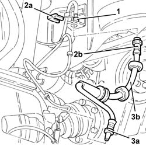
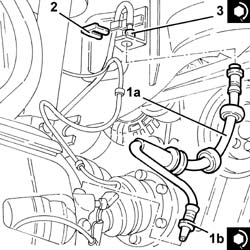
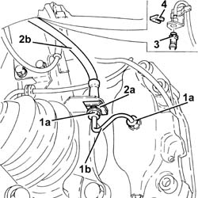
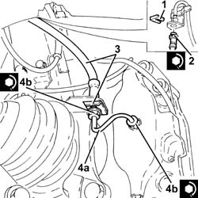

3330E10 L/H OR R/H HOSE (ONE) TO FRONT BRAKE CALIPERS - R+R
- Path
- Procedures > 33 BRAKING SYSTEM > 3330 HYDRAULIC BRAKING SYSTEM > 3330E HYDRAULIC BRAKE SYSTEM PIPES > 3330E10 L/H OR R/H HOSE (ONE) TO FRONT BRAKE CALIPERS - R+R
- Kind
- repair procedure (removal / refitting; the operation number is the code)
- Applies to
- all engines; all production periods
- Interactive page
- https://sloeber94.github.io/elrnDB-aGt/en/#/125001357
Applies to: engines: 1.8 T.SPARK, 2.0 JTS, 1.9 JTD 16V; all production periods
 Removing
Removing
 Refitting
RefittingPosition the vehicle on the ramp
Proceed with removal
Op. 4450B10 TYRE INFLATION VALVE CAP - REPLACE
1. Undo the connector on the front brake caliper flexible pipe, rigid pipe side.
2. Remove the stop (2a) and release the front brake caliper flexible pipe (2b) from the mounting bracket.
3. Undo the connector (3a), brake caliper side, and remove the front brake caliper flexible pipe (3b) after releasing it from the mounting bracket.

Applies to: engines: 1.8 T.SPARK, 2.0 JTS, 1.9 JTD 16V; all production periods
Refitting
Removing1. Refit in its seating the front brake caliper flexible pipe (1a) and connect it to the brake caliper, tightening the connector (1b) to the specified torque.
 | Fastening | Component | Ø | Value (daNm) |
|---|---|---|---|---|
1b | Connector | HOSE TO FRONT BRAKE CALIPER | M10 | (Brake caliper side) 1.3 ÷ 1.5 |
2. Fix the brake caliper flexible pipe to the mounting bracket using the fastening.
3. Tighten the connector on the front brake caliper flexible pipe, rigid pipe side, to the recommended torque.
| Fastening | Component | Ø | Value (daNm) |
|---|---|---|---|---|
3 | Connector | HOSE TO FRONT BRAKE CALIPER | M10 | (Rigid pipe side) 1.3 ÷ 1.5 |

Applies to: engines: 1.8 T.SPARK, 2.0 JTS, 1.9 JTD 16V; all production periods
Bleed the air from the hydraulic braking system
Op. 3330A14 FRONT OR REAR HYDRAULIC BRAKE SYSTEM - BLEED.
Proceed with refitting
Op. 4450B10 TYRE INFLATION VALVE CAP - REPLACE.
Remove the car from the ramps.
Applies to: engines: 3.2 V6; all production periods
Removing
RefittingPosition the vehicle on the ramp
Proceed with removal
Op. 4450B02 LEFT FRONT WHEEL R R
Remove the protective cap on the brake caliper bleed valve.
Connect the collection system (pipe and reservoir) to the bleed valve on the brake caliper.
Operate the brake pedal until the brake-clutch reservoir and pipes are empty.
1. Undo the connectors (1a) and remove the rigid pipe to the brake caliper (1b).
2. Remove the stop (2a) and release the hose to the front brake caliper (2b) from the bottom bracket.
Release the retaining clip on the front brake caliper hose from the central mounting bracket.
3. Undo the connector on the front brake caliper flexible pipe, rigid pipe side.
4. Remove the fastener and release the front brake caliper hose from the top mounting bracket, then remove it.

Applies to: engines: 3.2 V6; all production periods
Refitting
Removing1. Refit the front brake caliper hose in its seating, then secure it to the top mounting bracket with the fastener.
2. Tighten the connector on the front brake caliper flexible pipe, rigid pipe side.
| Fastening | Component | Ø | Value (daNm) |
|---|---|---|---|---|
2 | Bolt | LOWER ROD ON ENGINE | M12 x 1.25 | 12 |
Engage the front brake caliper hose retaining clip to the central mounting bracket.
3. Secure the front brake caliper hose to the bottom mounting with the fastening.
4. Refit the rigid pipe to the brake caliper (4a) in its seating and tighten the connectors (4b) to the specified torque.
| Fastening | Component | Ø | Value (daNm) |
|---|---|---|---|---|
4b | Connector | FITTING FOR PIPE TO CALIPER | M10 | (Brake caliper side) 1.4 ÷1.8 |
| Fastening | Component | Ø | Value (daNm) |
|---|---|---|---|---|
4b | Connector | FITTING FOR PIPE TO CALIPER | M10 | (Flexible pipe side) 1.4 ÷ 1.8 |

Applies to: engines: 3.2 V6; all production periods
Top up the brake-clutch fluid level
Op. 0010T64 BRAKE AND OR CLUTCH FLUID CHECK LEVEL AND TOP UP AS NECESSARY.
Bleed the air from the hydraulic braking system
Op. 0010T65 HYDRAULIC BRAKE SYSTEM BLEED AIR.
Proceed with refitting
Op. 4450B02 LEFT FRONT WHEEL R R.
Remove the car from the ramps.
Topics linked from this page (5)
- 0010T64 BRAKE AND OR CLUTCH FLUID CHECK LEVEL AND TOP UP AS NECESSARY
- 0010T65 HYDRAULIC BRAKE SYSTEM BLEED AIR
- 3330A14 FRONT OR REAR HYDRAULIC BRAKE SYSTEM - BLEED
- 4450B02 LEFT FRONT WHEEL R R
- 4450B10 TYRE INFLATION VALVE CAP - REPLACE